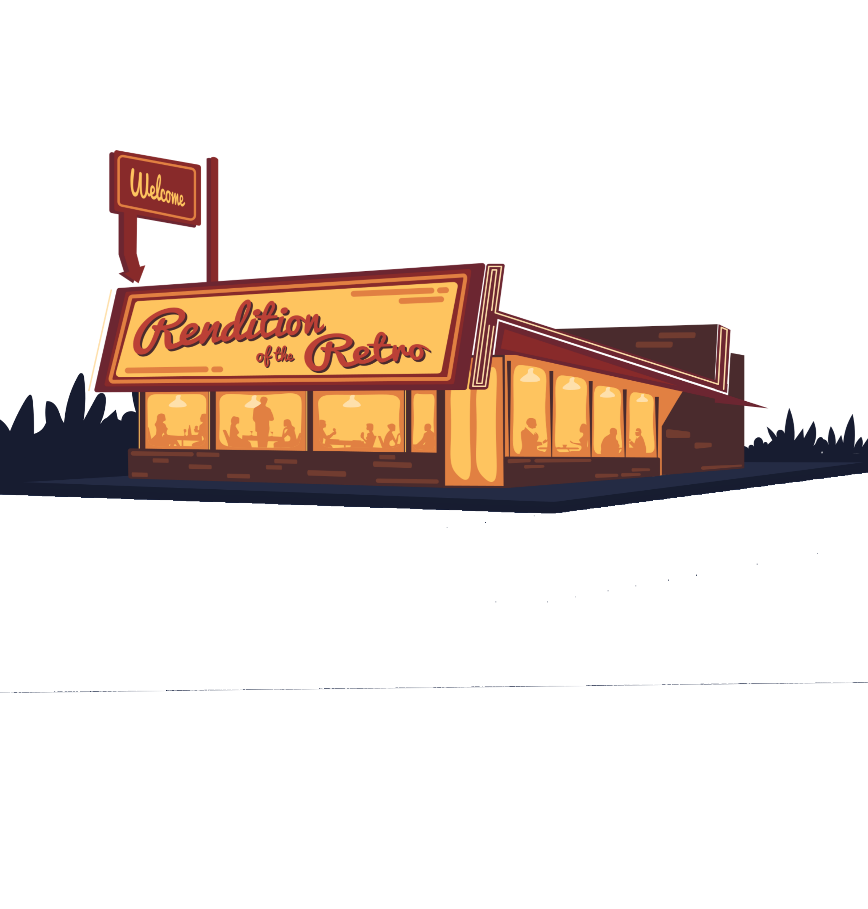

THEME ➱
THEME
The fabric of Kashiyatra is woven from customs and traditions of Kashi, a city acclaimed older than history. Kashiyatra blissfully depicts the holistic Rendition of the Retro in its very decent and existence.
The theme will take us back into the good old days through the three-day fiesta bringing back the all the quirkiness and nostalgia of the golden days. Take a step back in time with Kashiyatra'20 into the decades dedicated to disco dancing, crazy dressing and groovy music.